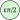
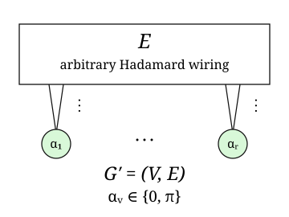
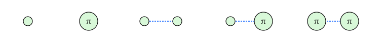

Setup
| \(\mathcal G\) | \(\llbracket\,\cdot\,\rrbracket\) |
|---|---|
 |
\(\ket{0}^{\otimes n}\!\bra{0}^{\otimes m}+ e^{i\alpha}\ket{1}^{\otimes n}\!\bra{1}^{\otimes m}\) |
 |
\(\ket{+}^{\otimes n}\!\bra{+}^{\otimes m}+ e^{i\alpha}\ket{-}^{\otimes n}\!\bra{-}^{\otimes m}\) |
| \(\ket{+}\!\bra{0}+\ket{-}\!\bra{1}\) | |
 |
\(\ket{0}\!\bra{0}+\ket{1}\!\bra{1}\) |
 |
\(\ket{00}+\ket{11}\) |
| \(\bra{00}+\bra{11}\) | |
| \(\ket{00}\!\bra{00}+\ket{01}\!\bra{10}+\ket{10}\!\bra{01}+\ket{11}\!\bra{11}\) |
\[
\begin{alignedat}{2}
\ket{0} &= \begin{pmatrix}1\\0\end{pmatrix}
&\qquad\qquad \ket{1} &= \begin{pmatrix}0\\1\end{pmatrix} \\[0.28em]
\ket{+} &= \frac{1}{\sqrt{2}}\begin{pmatrix}1\\1\end{pmatrix}
&\qquad\qquad \ket{-} &= \frac{1}{\sqrt{2}}\begin{pmatrix}1\\-1\end{pmatrix}
\end{alignedat}
\]
Scalar Completeness
Proposition 5.5.1. Any scalar Clifford diagram can be rewritten to be a product of the following scalar subdiagrams:
 ,
, ,
, ,
, ,,
,,
Proof.
Let \(D\) be an arbitrary closed Clifford diagram.
(scalar-accurate).
: choose any connected \(\pm\pi/2\) spider.
and .
Repeat until every connected phase is \(0\) or \(\pi\).
: choose an adjacent Pauli pair meeting the rest.
(scalar-accurate).
Repeat until each component has at most two spiders.
; collect identical components.
 \(=\)
\(=\)  \(=\)
\(=\) \(\boxed{D}\)
\(\boxed{D}\;=\)
\(\vdots\)
\(a\)
\(a+\ell_+\)
\(a^{\prime}\)
\(a^{\prime}+m_+\)
\(a^{\prime\prime}\)
\(\vdots\)
\(c\)
\(c+\ell_-\)
\(c^{\prime}\)
\(c^{\prime}+m_-\)
\(c^{\prime\prime}\)
\(\vdots\)
\(jk\)
\(b\)
\(\vdots\)\(p\)
\(\vdots\)\(q\)


\(\boxed{G^{\prime\prime}}\)
\(a,c\in\mathbb N_0\). The three-wire component is retained.
All other vertices and edges are in \(Q\); only neighborhood edges change.
\(\ell=\binom d2-d-2t\), \(\ell_+=\max(\ell,0)\), \(\ell_-=\max(-\ell,0)\).
\(t\) counts edges already present between neighbors.
\(t\) counts edges already present between neighbors.
\(p,q\in\mathbb N_0\). Every application removes one connected spider.
\(A,B,C\) are the exclusive, common, and exclusive neighbor families.
\(m=1-|A|-|C|-2|B|+|A||B|+|A||C|+|B||C|-2t-jk\).
\(m_+=\max(m,0)\), \(m_-=\max(-m,0)\); \(t\) counts existing toggled edges.
\(m_+=\max(m,0)\), \(m_-=\max(-m,0)\); \(t\) counts existing toggled edges.
Each component of \(G^{\prime\prime}\) is one of:

\(\vdots\)
\(a_1\)
\(a_1^{\prime}\)
\(a_1^{\prime\prime}\)
\(\vdots\)\(a_2\)
\(\vdots\)\(a_3\)
\(\vdots\)\(a_4\)
\(\vdots\)\(a_5\)
\(\vdots\)\(a_6\)
\(\vdots\)\(p\)
\(\vdots\)\(q\)
\(a_1,\ldots,a_6,p,q\in\mathbb N_0\).
\(a_1^{\prime}=a_1+a_5\).
\(a_1^{\prime\prime}=a_1^{\prime}+2a_4\).
The six scalar factors of Proposition 5.5.1. ■
The six scalar factors of Proposition 5.5.1. ■
Scalar Completeness
Theorem 5.5.2. We can rewrite any non-zero scalar Clifford diagram \(D\) to a unique normal form:
\(\mathsf{ZX}\vdash\boxed D=\boxed{D_1}^{\,n}\,\boxed{D_2}\,\boxed{D_3}\)
where
\(D_1\in\)\(\bigl\{\),\(\bigr\}\)
,\(\bigr\}\)\(D_2\in\)\(\bigl\{\), \(\bigr\}\)
\(\bigr\}\)
\(\bigr\}\)\(D_3\in\)\(\bigl\{\),, ,\(\bigr\}\)
,\(\bigr\}\)
,,,\(\bigr\}\)\(n\in\mathbb N_0\); when \(n=0\), the first block is empty.
Proof.
By .
Since \(\llbracket D\rrbracket\ne0\), \(n_0=0\).
.
and
\(=\)
\(=\)
\(=\) \(\llbracket\) \(\rrbracket=1+e^{i\pi}=0\)
\(\rrbracket=1+e^{i\pi}=0\)\(\boxed D\;=\)
\(\vdots\)
\(a\)
\(a^{\prime}\)
\(a^{\prime\prime}\)
\(u\)
\(\vdots\)
\(b\)
\(b^{\prime}\)
\(b^{\prime\prime}\)
\(\vdots\)
\(c\)
\(c^{\prime}\)
\(c^{\prime\prime}\)
\(v\)
\(\vdots\)\(n_0\)
\(\vdots\)\(n_+\)
\(\vdots\)\(n_-\)
\(R\)
\(D_3\)
\(D_2\)
\(a,b,c,n_0,n_+,n_-\in\mathbb N_0\)
\(R\in\)\(\bigl\{\),,,,\(\bigr\}\)
,,,,\(\bigr\}\)\(D_3\in\)\(\bigl\{\),,,\(\bigr\}\)
,,,\(\bigr\}\)\(D_2\in\)\(\bigl\{\),\(\bigr\}\)
,\(\bigr\}\)\(b^{\prime\prime}=2q+r\), \(r\in\{0,1\}\); \(u=a^{\prime\prime}+2q\), \(v=c^{\prime\prime}\).
\(\left\{\vphantom{\begin{matrix}1\\1\\1\\1\\1\\1\\1\\1\end{matrix}}\right.\)
\(\vdots\;u-v\)\(u>v\)\(u=v\)\(\vdots\;v-u\)\(u\lt v\)\(\underbrace{\hspace{5.8em}}_{D_1^{\,n}}\)
\(=\boxed{D_1^{\,n}D_2D_3}\)
\(n=|u-v|\)
Scalar Completeness
continued...
To see this is a unique representation of the scalar let \(s\) denote the value of the scalar the diagram represents. The type of \(D_3\) tells us whether
\(\operatorname{Re}(s)=\operatorname{Im}(s)\)
\(D_3=\)\(=1+i\)
\(=1+i\)\(\operatorname{Re}(s)=-\operatorname{Im}(s)\)
\(D_3=\)\(=1-i\)
\(=1-i\)\(\operatorname{Re}(s)=0\)
\(D_3=\)\(=\sqrt2 i\)
\(=\sqrt2 i\)\(\operatorname{Im}(s)=0\)
\(D_3=\)\(=1\)
\(=1\)As \(s\ne0\) by assumption \(D_3\) must then be the same for any diagram representing \(s\) in this normal form.
Similarly \(D_2\) tells us whether the real part of \(s\) is positive (or the imaginary part in case \(D_3=\)), since \(D_2\) either represents \(-\sqrt2\) or \(1\), so that this must also be the same diagram for every representation of \(s\).
\(=1\) \(=-\sqrt2\)The sign fixes \(D_2\).
Finally, \(D_1\) being \(=\sqrt2\) or \(=1/\sqrt2\) together with the value of \(k\) tells us the magnitude of \(\operatorname{Re}(s)\) (or \(\operatorname{Im}(s)\)), and hence is also uniquely determined by \(s\). ■
\(\rho=\frac{s}{\llbracket D_2\rrbracket\llbracket D_3\rrbracket}=(\sqrt2)^{\,j}>0\)
\(j>0:\)\(^{\,j}\)
\(^{\,j}\)\(j=0:\)
\(j\lt 0:\)\(^{\,-j}\)
\(^{\,-j}\)The book’s \(k\) is the \(n=|j|\) in our statement.
Zero. exposes a zero factor whenever \(\llbracket D\rrbracket=0\).
\(\llbracket\) \(\rrbracket=0\)
\(\rrbracket=0\)Every other factor has non-zero value.
:
\(\boxed D=\) \(\boxed R=\)
\(\boxed R=\) Thus all zero scalar diagrams rewrite to the same diagram.
\(\therefore\quad D_1,D_2\) scalar diagrams:
\(\llbracket D_1\rrbracket=\llbracket D_2\rrbracket\quad\Longrightarrow\quad\mathsf{ZX}\vdash D_1=D_2\)